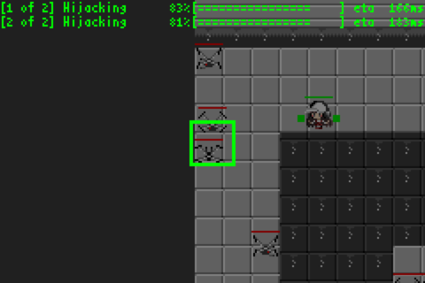

Hijack 開発ブログ
https://bydriv.github.io/blog/hijack-dev.html
created at
updated at
Hijack というゲームを開発している． ひと段落ついたので，ブログを書く．

フレーバー
20XX年，ドローンは人々の日常に溶けこみ， それがない生活が思いだせないほど社会に浸透していた． しかしプログラムにバグはつきもの……． 主人公のスパイの女の子，テーリは， そういったドローンのバグを利用することでそれらを自由に操る技術， ハイジャックをもちい，情報を集めるのだった．
ゲームシステム
フレーバーも重要だが，やはり気になるのはシステムであろう． システムは簡単にいうと，雑魚敵をはじめ機械に類するものはなんでもハイジャックできて， ハイジャックした結果の動作はオブジェクトによって異なる(予定だ)が， 基本的にはプレイヤーに味方するようになる，というもの．
それともうひとつ重要なのは，ハイジャックできる範囲についてだが， 初期状態ではプレイヤーはごく狭い，自機の周辺のわずかな範囲しかハイジャックできないが， ドローンなどをハイジャックするとそのドローンにあたかも自機があるかのようにハイジャックできる範囲が広がる． たとえば初期状態では自機の周辺 160px 程度しかハイジャックできないが， ハイジャックしたドローンがあれば 320px や 480px のように広がってゆく． ("狼煙" をイメージするといいかもしれない． ひとつの狼煙で合図できる範囲はかぎられているが， 狼煙を等間隔に配置すればより遠くまで合図できる (実際，現実世界のネットワークもそのように構成されている (余談だが Alice が Bob に秘密のメッセージを伝えたいが， 距離が遠すぎるので伝言ゲームで伝えようとしたときに， 途中のだれかがその内容をだれかに話してしまうかもしれない(中間者攻撃)． という場合に Alice は Bob にしか解読できないような方法で暗号化してメッセージを送るわけである． 暗号はこういうネットワークの仕組みも考慮して設計される(早口言葉))))
これをうまく利用すると，主人公がスタート地点から1歩も動かなくても目的の情報が入手できる(ようにしたい)． (クリア条件はまだ暫定的に敵の全滅としてあるけど，情報の入手にするつもり)． なので，ふつうに歩いて目的地まで侵入することもできるし， スタート地点からこのしくみだけで情報を入手する， みたいな遊び方もできるようにしたい．
ハイジャック以外のシステムは，基本的にほかのアクションゲームと似たものにするつもり． そっちのほうが遊びやすいひともいるだろうし， ハイジャックは基本的に遠距離で使ったほうが強くて， 接近戦では弱いというバランス感覚にしたい． (いまのところ，ハイジャックにかかる時間は1秒(60F)で， 通常攻撃は発生6F持続6F硬直8F(全体20F)くらいにしてある． しかも，ハイジャック中テーリは動けない． なので接近戦をする場合はほかのアクションゲームと似たようなアクションが強くて， 基本的に接近戦に持ちこまれないような遊び方をする，という感じにしたい)
プロジェクト管理など
正直，プロジェクト管理はすごく難しい．
ひとりでもすごくたいへんなのに，複数人でやるとなると極端に難しいことだと思う．
わたしは，
- 短期的な計画は詳細に決める
- 長期的な計画は大雑把に決める
という感じにやっている．
正直いうと，長期的な計画は変化しがちだし， そもそも現実感がなさすぎて実行できない． 「仕様はこうこうこうで，1年後はこれを実装する」みたいにやったところで， そのとおりに行動することは不可能だと思ってよい気がする．
ひるがえって，短期的な行動は制御しやすい． 短期的，の感覚はひとによっても状況によっても異なると思うが， わたしにとってはおおむね2週間程度である． このくらいの期間の計画は，それなりに実行できる． 逆に計画がないとなにもしないことが多い気がする．
長期的に決めておくのは，たとえば「実装したいのはゲームであって，言語ではない」とか， 「実装したいのはアクションゲームであって，RPGではない」とか， そういうことである．けっこう，決めておかないとこのへんの方針は変わりやすい． ゲームの実装中に言語を実装したいとかそういうきもちになることはよくあるし， そこまでいかずとも使う言語を変えたいみたいなことはよくある． ゲームはゲームでもひとの心は変わりやすいものだし当初はアクションゲームを実装したいと思っていたのに， 途中からRPGにしたいとかはけっこうある． こういう部分で変更が起こってしまうとそれまでの作業がすべて水泡に帰すので， そこは決めておいたほうがいいと思う．
今回実装しているゲームは，これまでけっこういろいろあったのだけどそういう根本的な方針が揺らがないでいるから， そこはうまくいっている気がする．
今後の展望
とりあえずいま実装できているのはコア部分のシステムくらいで， たとえばストーリーだとかそういうものはまったく実装できていない． なので，これからはそういうのを実装したい．
長編にするのはたぶんうまくいかない，と考えている． そうではなく，短編集というか，エピソードを選択したら短いエピソードが遊べる， みたいな感じにしたい． エピソードごとに多少関連はあるが，基本的にどのタイミングで完成としても問題ない， という状況にもっていきたい．
それぞれのエピソードはそれ単体で完結していて， 最悪ひとつエピソードができればそれで完成． というかむしろ，いちおう遊べるし現時点でひとまず完成(？)． でいい気がする．そんな感じにやってゆきたいという感じです．